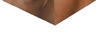

Навигация по пунктам дз
-
Использовать 3 взаимосвязи селекторов (пробел, >, +, ~).
- a img
- nav>a
- header~p
-
Использовать селекторы по: классу, имени тега, ID.
- класс - .lob
- имя тега - h1
- ID - bottomtext
-
Использовать два любых псевдоселектора.
- div.nig:hover (в квадрате)
- a:visited (другой цвет для всех посещённых ссылок)
-
Использовать оба псевдокласса ::before и ::after.
- nav>a::before
- nav>a::after
-
Использовать var и calc.
- var --man_size внутри #man и #mantext (объявлена в :root)
- calc внутри #dempic
-
Использовать em, rem — с демонстрацией разницы, а также показать разницу использования em для font-size и других свойств.
- посмотрите
- код
- этого
- списка
-
Использовать px, %, cm.
- px - #dembg
- %, cm - #demframe (вместо cm - in, надеюсь, не страшно)
-
Испробовать все виды display и position.
display - их там 23, с меня хватило четырёх
- они показанывот в этом разделе
position:
- static - буквально этот же элемент списка
- relative - квадрат Малевича
- fixed - смайлик справа внизу, который хочет потрогать Ваш курсор
- absolute - изображение Идущего к реке
- sticky - плашка вверху страницы
-
Продемонстрировать работу каскада каскадных стилей.
- этот и два последующих элемента принадлежат классу based
- но у этого элемента другой фон, потому что так работают каскады
- это сочетание цветов ужасно
-
Использовать 1 свойство, которое мы не проходили.
- cursor: pointer (дайте курсор потрогать)
Идущий К Реке.
Демотиватор. Но есть нюанс.
я не знаю как сделать, чтобы отступ сверху от картинки тоже был чёрным
В эти поля можно добавить свой текст. Возможно, когда-нибудь я научусь делать так, чтобы можно было добавить и свою картинку
"Чёрный квадрат" Малевича
Говорят, если навести на него курсор, то он станет ещё чернее. Примерно как мои шутки.
Доделываю
none:
На самом деле здесь есть картинки. Их просто нет.
block:
inline:
inline-block:
туториал говорит, что для инлайн-блочных элементов можно задавать размер